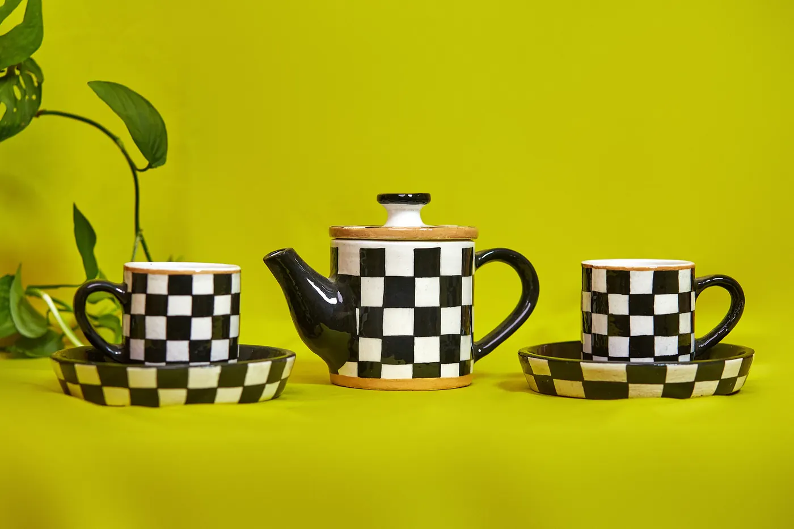
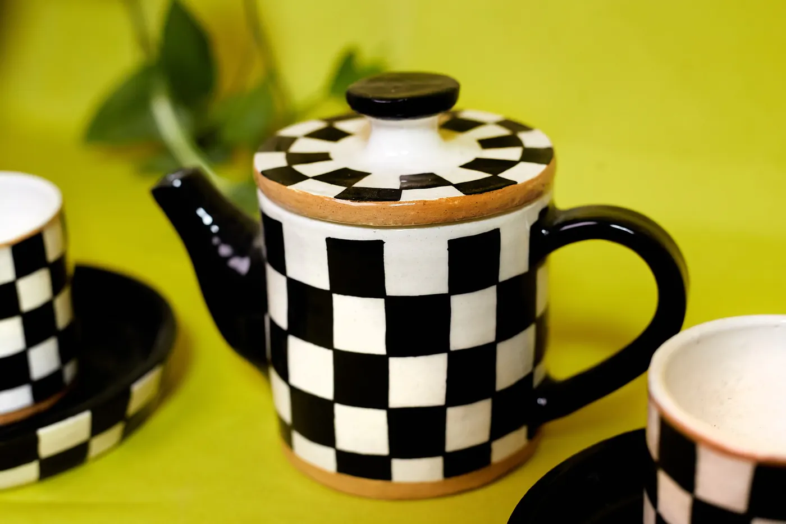
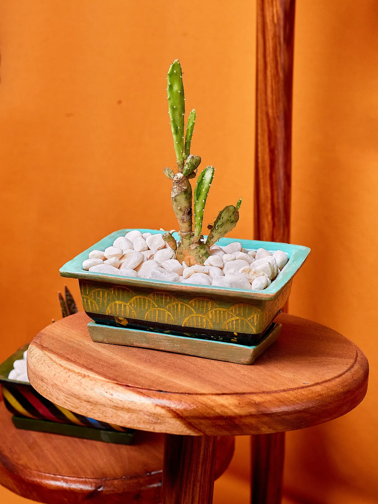
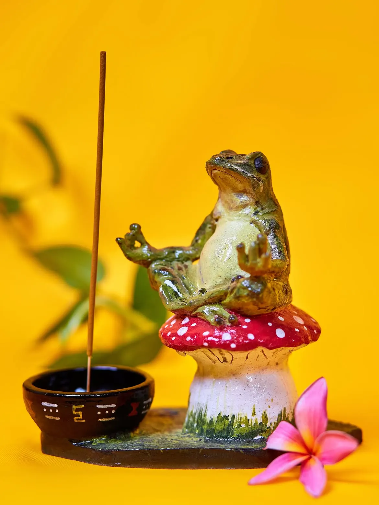
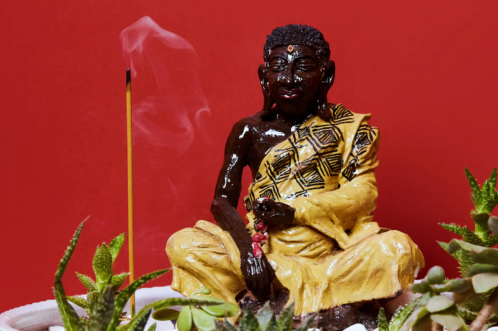

A little paint.
A lot of you.
Choose a handmade piece from Wildflower Ceramics, settle in with a drink, and let your imagination take the lead.
How it works colour outside the lines
colour outside the linesPick it.
Paint it.
Keep it.
No perfect lines required. Just a piece you love, a palette of colour and time to make something that feels like you.
- 01
Choose your piece
Browse the Wildflower shelves for a mug, bowl, plate or a little treasure. Each one is handmade.
- 02
Make your palette
Find a spot at Casa Luano, order something to sip or snack on, and paint away.
- 03
Leave the kiln to us
Wildflower Ceramics takes care of glazing and firing after your painting session.
- 04
Collect your creation
Come back for your finished piece when it's ready, usually within two to four weeks.

All the colour.
Kiln work included.
Pottery painting ranges from K150 to K800 depending on the piece. Paints, glazing and firing are included.
Walk-ins are welcome during café opening hours. For a special occasion or a group, please enquire in advance.
Make it a group dayFind your
starting point.
Little things, useful things, statement pieces. Every piece leaves room for your own imagination.




Ready to paint your own?
Drop by during café hours, or enquire ahead for a group or special occasion.
Find us on Instagram